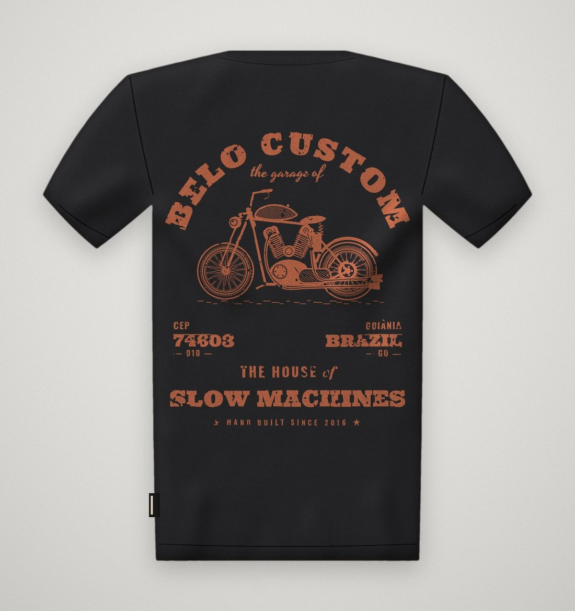
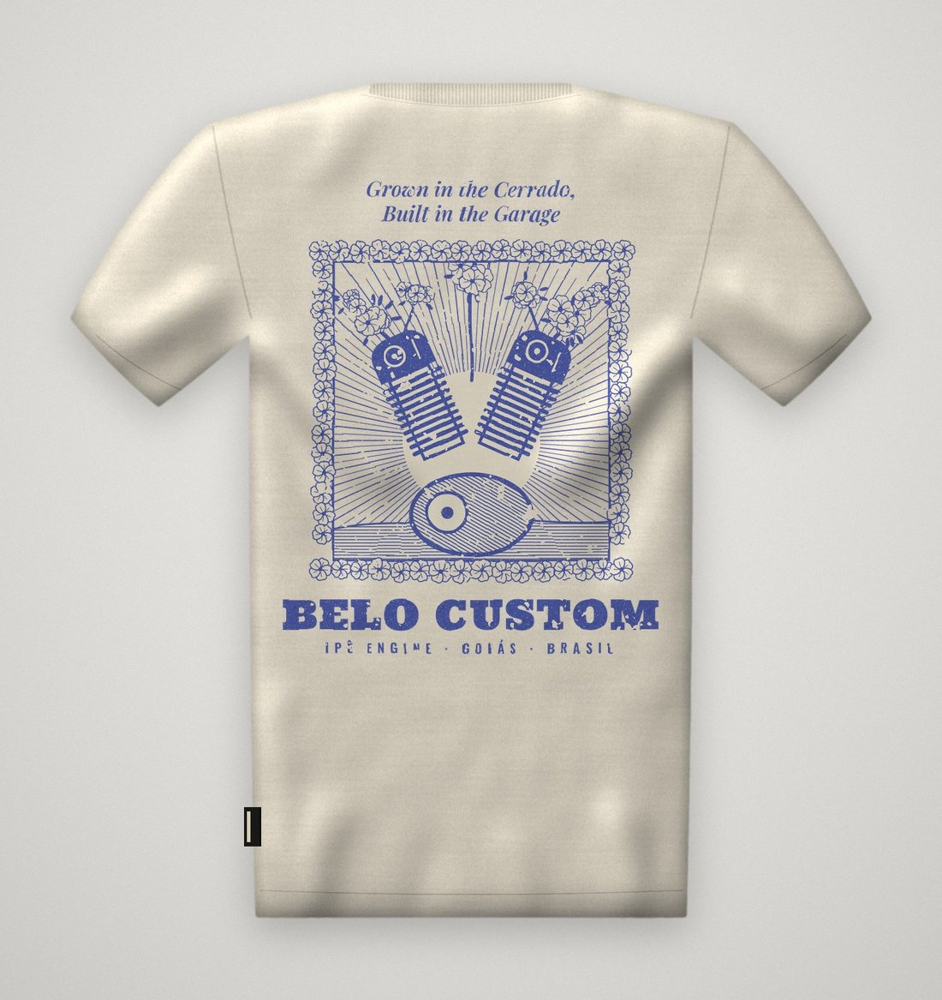
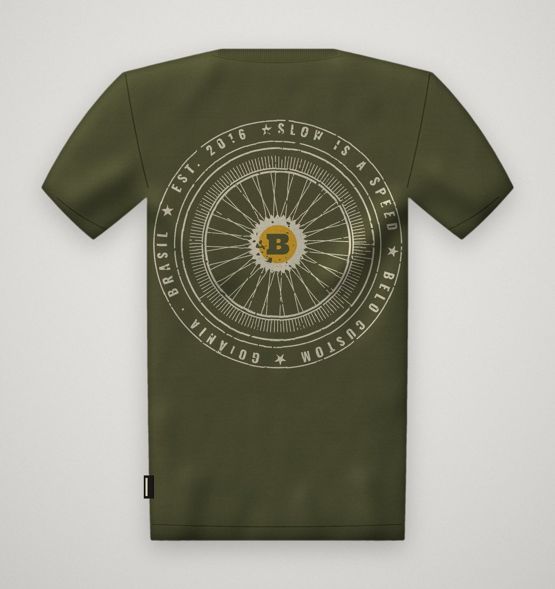
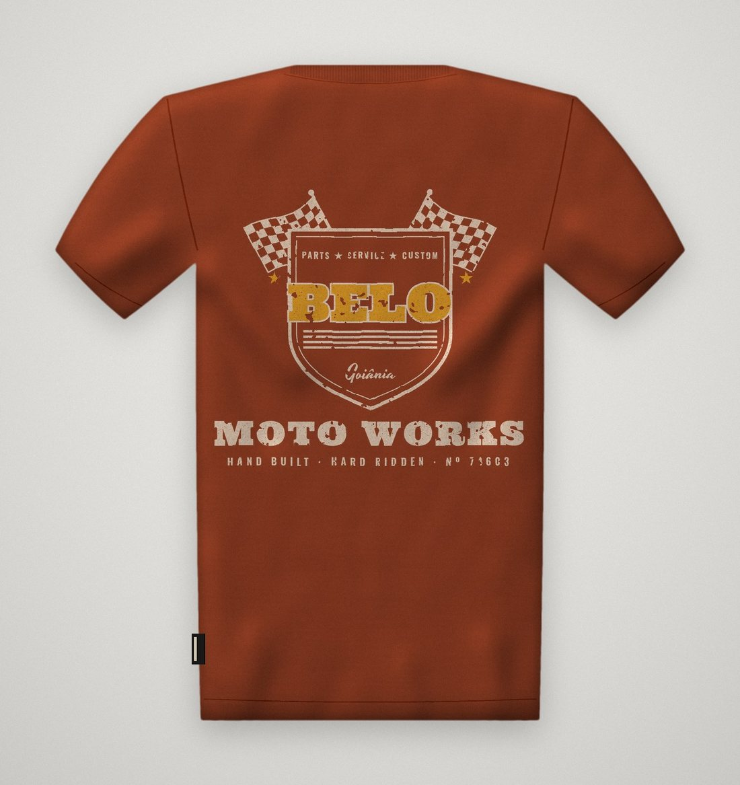
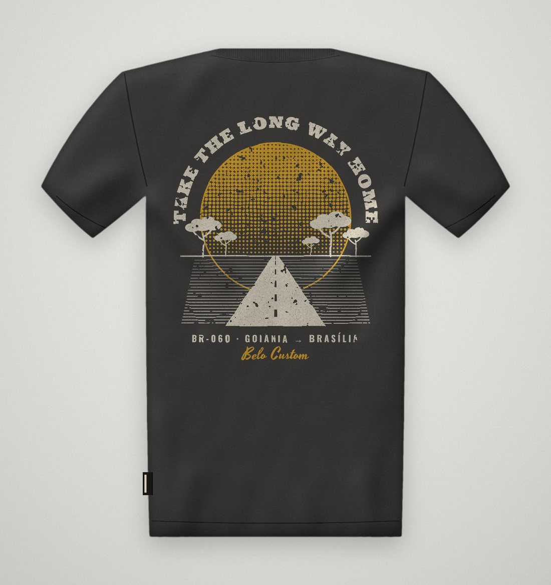

<title>Belo Custom Garage Goods</title>
<meta name="claude:viewport-fit-sides" content="cover">
<link rel="preconnect" href="https://fonts.googleapis.com">
<link rel="preconnect" href="https://fonts.gstatic.com" crossorigin>
<link rel="stylesheet" href="https://fonts.googleapis.com/css2?family=Archivo:wght@400;500;600&family=Big+Shoulders+Display:wght@500;700;800;900&family=IBM+Plex+Mono:wght@400;500&family=Yellowtail&display=swap">
<style>
/* Layout: livro de marca em capítulos, alternando chão de oficina (escuro) e papel de etiqueta (claro). Um só visual, escolhido de propósito. */
:root {
  --graxa: #14110E;
  --graxa-2: #1F1B17;
  --graxa-3: #2B2621;
  --osso: #EBE0C9;
  --osso-2: #DED1B6;
  --osso-dim: #A79C87;
  --terra: #A8431F;
  --terra-claro: #C9572C;
  --ipe: #E0A526;
  --cerrado: #50512F;
  --cromo: #8E8C86;
  --tinta-clara: #3A332B;

  --f-display: "Big Shoulders Display", "Oswald", "Arial Narrow", Impact, sans-serif;
  --f-script: "Yellowtail", "Brush Script MT", cursive;
  --f-mono: "IBM Plex Mono", ui-monospace, "SFMono-Regular", Menlo, monospace;
  --f-body: "Archivo", "Helvetica Neue", Arial, sans-serif;

  --wrap: 1180px;
  color-scheme: dark;
}
* { box-sizing: border-box; }
html { -webkit-text-size-adjust: 100%; }
body {
  background: var(--graxa);
  color: var(--osso);
  font-family: var(--f-body);
  font-size: 16px;
  line-height: 1.6;
}
body::after {
  content: "";
  position: fixed; inset: 0;
  pointer-events: none;
  z-index: 50;
  opacity: .09;
  background-image: url("data:image/svg+xml;utf8,<svg xmlns='http://www.w3.org/2000/svg' width='220' height='220'><filter id='n'><feTurbulence type='fractalNoise' baseFrequency='.85' numOctaves='3' stitchTiles='stitch'/><feColorMatrix values='0 0 0 0 1  0 0 0 0 .95  0 0 0 0 .85  0 0 0 .9 0'/></filter><rect width='100%' height='100%' filter='url(%23n)'/></svg>");
}
.band { padding-block: clamp(64px, 9vw, 120px); }
.band.claro { background: var(--osso); color: var(--graxa); }
.band.medio { background: var(--graxa-2); }
.wrap {
  max-width: var(--wrap);
  margin: 0 auto;
  padding-left: max(16px, env(safe-area-inset-left, 0px));
  padding-right: max(16px, env(safe-area-inset-right, 0px));
}
h1, h2, h3 { font-family: var(--f-display); font-weight: 900; text-transform: uppercase; line-height: .9; margin: 0; text-wrap: balance; letter-spacing: .01em; }
h2 { font-size: clamp(44px, 7vw, 92px); }
h3 { font-size: 26px; font-weight: 800; letter-spacing: .03em; }
p { margin: 0; }
.mono { font-family: var(--f-mono); font-size: 12px; letter-spacing: .14em; text-transform: uppercase; }
.lede { font-size: clamp(18px, 2vw, 21px); line-height: 1.55; max-width: 62ch; }
.muted { color: var(--osso-dim); }
.claro .muted { color: #6E6455; }

/* Cabeçalho de capítulo */
.cap { display: grid; grid-template-columns: 160px 1fr; gap: 24px 40px; align-items: end; margin-bottom: clamp(40px, 6vw, 72px); }
.cap .num { font-family: var(--f-mono); font-size: 12px; letter-spacing: .14em; text-transform: uppercase; border-top: 2px solid currentColor; padding-top: 10px; align-self: start; }
.cap .num b { display: block; font-family: var(--f-display); font-size: 64px; line-height: 1; letter-spacing: 0; font-weight: 900; color: var(--terra-claro); }
.claro .cap .num b { color: var(--terra); }
.cap-body { display: grid; gap: 18px; min-width: 0; }
@media (max-width: 720px) { .cap { grid-template-columns: 1fr; } .cap .num b { font-size: 44px; } }

/* ---------- CAPA ---------- */
.capa { padding-block: 28px clamp(56px, 8vw, 96px); position: relative; overflow: hidden; }
.topo { display: flex; justify-content: space-between; gap: 16px; flex-wrap: wrap; border-bottom: 1px solid var(--graxa-3); padding-bottom: 14px; color: var(--osso-dim); }
.lockup { position: relative; margin-top: clamp(40px, 7vw, 90px); display: grid; justify-items: start; }
.lk-top { display: flex; align-items: center; gap: 14px; color: var(--ipe); }
.lk-top::after { content: ""; width: 64px; height: 2px; background: currentColor; }
.lk-main {
  font-family: var(--f-display); font-weight: 900;
  font-size: clamp(132px, 30vw, 380px);
  line-height: .78; letter-spacing: -.005em;
  color: var(--osso);
  margin-top: 14px;
}
.lk-script {
  font-family: var(--f-script);
  font-size: clamp(54px, 11vw, 150px);
  color: var(--ipe);
  line-height: 1;
  transform: rotate(-7deg);
  margin-top: clamp(-70px, -6.5vw, -28px);
  margin-left: clamp(40px, 12vw, 190px);
  text-shadow: 4px 4px 0 var(--graxa), -4px -4px 0 var(--graxa), 4px -4px 0 var(--graxa), -4px 4px 0 var(--graxa), 0 5px 0 var(--graxa), 5px 0 0 var(--graxa), 0 -5px 0 var(--graxa), -5px 0 0 var(--graxa);
  animation: assina 1.1s cubic-bezier(.2,.8,.2,1) both .25s;
}
@keyframes assina { from { clip-path: inset(0 100% 0 0); } to { clip-path: inset(0 0 0 0); } }
.lk-bot { display: flex; flex-wrap: wrap; gap: 10px 28px; margin-top: clamp(34px, 5vw, 64px); color: var(--osso-dim); }
.lk-bot span:first-child { color: var(--osso); }
.capa-pe { display: grid; grid-template-columns: 1.3fr 1fr; gap: 32px 64px; margin-top: clamp(48px, 7vw, 88px); align-items: end; }
.capa-pe .lede { color: var(--osso); }
.selo-capa { justify-self: end; width: min(240px, 60vw); animation: gira 60s linear infinite; }
@keyframes gira { to { transform: rotate(360deg); } }
@media (max-width: 760px) { .capa-pe { grid-template-columns: 1fr; } .selo-capa { justify-self: start; } }

/* ---------- MANIFESTO ---------- */
.manifesto { font-family: var(--f-display); font-weight: 800; text-transform: uppercase; font-size: clamp(30px, 4.4vw, 56px); line-height: 1.02; max-width: 22ch; text-wrap: balance; }
.manifesto em { font-family: var(--f-script); text-transform: none; font-style: normal; font-weight: 400; color: var(--terra); font-size: 1.05em; }
.pilares { display: grid; grid-template-columns: repeat(3, minmax(0, 1fr)); gap: 0; margin-top: clamp(48px, 6vw, 80px); border-top: 2px solid var(--graxa); }
.pilar { padding: 24px 24px 8px 0; display: grid; gap: 12px; align-content: start; }
.pilar + .pilar { border-left: 1px solid #C9BB9C; padding-left: 24px; }
.pilar .mono { color: var(--terra); }
@media (max-width: 820px) { .pilares { grid-template-columns: 1fr; } .pilar + .pilar { border-left: 0; padding-left: 0; border-top: 1px solid #C9BB9C; } }

/* ---------- ARQUITETURA ---------- */
.arvore { display: grid; gap: 14px; }
.no { border: 1px solid var(--graxa-3); padding: 22px 24px; display: grid; gap: 8px; background: var(--graxa); }
.no.mae { display: grid; grid-template-columns: auto 1fr; gap: 24px; align-items: center; }
.no .mono { color: var(--ipe); }
.ramo { display: grid; grid-template-columns: repeat(3, minmax(0, 1fr)); gap: 14px; position: relative; }
.ramo .no { border-top: 3px solid var(--terra-claro); }
.ramo .no:nth-child(2) { border-top-color: var(--ipe); }
.ramo .no:nth-child(3) { border-top-color: var(--osso); }
.liga { height: 26px; border-left: 2px dashed var(--graxa-3); margin-left: 40px; }
@media (max-width: 820px) { .ramo { grid-template-columns: 1fr; } .no.mae { grid-template-columns: 1fr; } }

/* recriação da logo-mãe */
.logo-mae { display: inline-grid; justify-items: center; gap: 4px; font-family: var(--f-display); color: var(--osso); }
.logo-mae .caixa { border: 3px solid currentColor; padding: 2px 12px 0; font-weight: 800; font-size: 40px; line-height: 1; letter-spacing: .01em; box-shadow: inset 0 0 0 2px var(--graxa), inset 0 0 0 4px currentColor; }
.logo-mae .since { display: flex; align-items: center; gap: 8px; font-size: 11px; font-weight: 700; letter-spacing: .32em; }
.logo-mae .since::before, .logo-mae .since::after { content: ""; width: 28px; height: 2px; background: currentColor; }
.logo-mae .gyn { font-size: 8px; font-weight: 700; letter-spacing: .4em; }

/* ---------- LOGOS ---------- */
.logos { display: grid; grid-template-columns: repeat(12, minmax(0, 1fr)); gap: 14px; }
.lg { background: var(--graxa-2); border: 1px solid var(--graxa-3); padding: 20px; display: grid; grid-template-rows: 1fr auto; gap: 16px; min-height: 300px; }
.lg.claro { background: var(--osso); color: var(--graxa); border-color: var(--osso-2); }
.lg.terra { background: var(--terra); border-color: var(--terra); }
.lg.cerrado { background: var(--cerrado); border-color: var(--cerrado); }
.lg .arte { display: grid; place-items: center; min-height: 200px; }
.lg .arte svg { width: 100%; max-width: 260px; height: auto; overflow: visible; }
.lg .rot { display: flex; justify-content: space-between; gap: 12px; flex-wrap: wrap; border-top: 1px solid currentColor; padding-top: 10px; opacity: .85; }
.lg.span-7 { grid-column: span 7; } .lg.span-5 { grid-column: span 5; } .lg.span-4 { grid-column: span 4; }
@media (max-width: 900px) { .lg.span-7, .lg.span-5, .lg.span-4 { grid-column: span 12; } }
.wordmark { display: grid; justify-items: start; line-height: 1; }
.wordmark .w1 { font-family: var(--f-display); font-weight: 900; font-size: clamp(90px, 13vw, 150px); line-height: .8; }
.wordmark .w2 { font-family: var(--f-script); font-size: clamp(40px, 5.6vw, 64px); color: var(--ipe); transform: rotate(-7deg); margin: -26px 0 0 60px; text-shadow: 3px 3px 0 var(--graxa-2), -3px -3px 0 var(--graxa-2), 3px -3px 0 var(--graxa-2), -3px 3px 0 var(--graxa-2); }
.wordmark .w3 { margin-top: 12px; }

.regras { display: grid; grid-template-columns: repeat(auto-fit, minmax(240px, 1fr)); gap: 14px 32px; margin-top: 40px; }
.regras li { list-style: none; padding-left: 26px; position: relative; }
.regras li::before { content: "×"; position: absolute; left: 0; top: -2px; color: var(--terra-claro); font-family: var(--f-display); font-weight: 900; font-size: 22px; }
.regras li.sim::before { content: "✓"; color: var(--ipe); font-size: 18px; }
.regras ul { margin: 0; padding: 0; display: grid; gap: 10px; }

/* ---------- PALETA ---------- */
.cores { display: grid; grid-template-columns: repeat(6, minmax(0, 1fr)); gap: 10px; }
.cor { display: grid; grid-template-rows: 210px auto; border: 1px solid #CDBF9F; background: var(--osso); }
.cor .ch { position: relative; }
.cor .ch span { position: absolute; left: 12px; bottom: 10px; font-family: var(--f-mono); font-size: 11px; letter-spacing: .1em; }
.cor .info { padding: 14px 12px 16px; display: grid; gap: 6px; align-content: start; }
.cor .info h3 { font-size: 22px; }
.cor .info p { font-size: 13px; line-height: 1.45; color: #5C5346; }
.cor .info .mono { font-size: 10px; color: var(--graxa); }
@media (max-width: 980px) { .cores { grid-template-columns: repeat(3, minmax(0, 1fr)); } }
@media (max-width: 560px) { .cores { grid-template-columns: repeat(2, minmax(0, 1fr)); } .cor { grid-template-rows: 130px auto; } }
.proporcao { display: flex; height: 54px; margin-top: 28px; border: 1px solid #CDBF9F; }
.proporcao div { display: flex; align-items: flex-end; padding: 6px 8px; font-family: var(--f-mono); font-size: 10px; letter-spacing: .08em; min-width: 0; overflow: hidden; white-space: nowrap; }

/* ---------- TIPOGRAFIA ---------- */
.tipos { display: grid; gap: 0; border-top: 1px solid var(--graxa-3); }
.tipo { display: grid; grid-template-columns: 220px 1fr; gap: 16px 40px; padding: 30px 0; border-bottom: 1px solid var(--graxa-3); align-items: center; }
.tipo .meta { display: grid; gap: 6px; }
.tipo .meta .mono { color: var(--ipe); }
.tipo .meta p { font-size: 14px; color: var(--osso-dim); line-height: 1.45; }
.tipo .amostra { min-width: 0; overflow-wrap: anywhere; }
.am-display { font-family: var(--f-display); font-weight: 900; font-size: clamp(48px, 8vw, 104px); line-height: .88; text-transform: uppercase; }
.am-script { font-family: var(--f-script); font-size: clamp(56px, 8vw, 96px); line-height: 1.1; color: var(--ipe); }
.am-mono { font-family: var(--f-mono); font-size: clamp(14px, 1.6vw, 18px); letter-spacing: .08em; line-height: 1.9; }
.am-body { font-size: 18px; max-width: 58ch; }
@media (max-width: 760px) { .tipo { grid-template-columns: 1fr; } }

/* ---------- SELOS ---------- */
.selos { display: flex; flex-wrap: wrap; gap: 14px; align-items: center; }
.carimbo { font-family: var(--f-mono); font-size: 12px; letter-spacing: .16em; text-transform: uppercase; border: 2px solid currentColor; padding: 8px 14px; transform: rotate(var(--r, 0deg)); }
.carimbo.t { color: var(--terra-claro); --r: -3deg; }
.carimbo.i { color: var(--ipe); --r: 2deg; }
.carimbo.o { color: var(--osso); --r: -1deg; }
.carimbo.cheio { background: var(--osso); color: var(--graxa); border-color: var(--osso); --r: 1.5deg; }
.carimbo.dup { border-style: double; border-width: 5px; }
.fita { display: inline-flex; align-items: center; gap: 18px; background: var(--ipe); color: var(--graxa); font-family: var(--f-display); font-weight: 900; text-transform: uppercase; font-size: 22px; letter-spacing: .08em; padding: 6px 22px; clip-path: polygon(0 0, 100% 0, 96% 50%, 100% 100%, 0 100%, 4% 50%); }
.listra { height: 18px; margin-top: 36px; background: repeating-linear-gradient(-45deg, var(--ipe) 0 14px, var(--graxa) 14px 28px); }

/* ---------- CAMISETAS ---------- */
.drop { display: grid; grid-template-columns: repeat(2, minmax(0, 1fr)); gap: 40px 22px; }
.produto { display: grid; gap: 16px; align-content: start; min-width: 0; }
.produto.destaque { grid-column: 1 / -1; grid-template-columns: 1.25fr 1fr; gap: 24px 48px; align-items: center; }
.produto .foto { position: relative; background: #E4E2DE; }
.produto .foto img { display: block; width: 100%; height: auto; aspect-ratio: 1100 / 1167; object-fit: cover; }
.lados { position: absolute; left: 14px; bottom: 14px; display: flex; gap: 6px; }
.lados button, .lados .so { font-family: var(--f-mono); font-size: 11px; letter-spacing: .12em; text-transform: uppercase; padding: 7px 12px; border: 1px solid var(--graxa); background: rgba(235,224,201,.85); color: var(--graxa); cursor: pointer; }
.lados .so { cursor: default; }
.lados button.on { background: var(--graxa); color: var(--osso); }
.lados button:focus-visible { outline: 2px solid var(--terra); outline-offset: 2px; }
.produto .ficha { display: grid; gap: 8px; }
.produto .topo-f { display: flex; justify-content: space-between; gap: 12px; align-items: baseline; }
.produto h3 { font-size: 30px; }
.produto.destaque h3 { font-size: clamp(40px, 5vw, 64px); }
.produto .cor-malha { color: var(--terra); font-size: 11px; }
.produto p { font-size: 15px; line-height: 1.55; color: #5C5346; max-width: 52ch; }
.produto.destaque p { font-size: 18px; }
.linha-tag { font-family: var(--f-mono); font-size: 10px; letter-spacing: .12em; padding: 3px 7px; background: var(--graxa); color: var(--osso); white-space: nowrap; }
@media (max-width: 760px) { .drop { grid-template-columns: 1fr; } .produto.destaque { grid-template-columns: 1fr; } }
.espec { display: grid; grid-template-columns: repeat(4, minmax(0, 1fr)); gap: 0; margin-top: 48px; border-top: 2px solid var(--graxa); }
.espec div { padding: 16px 16px 0 0; display: grid; gap: 4px; }
.espec div + div { padding-left: 16px; border-left: 1px solid #C9BB9C; }
.espec b { font-family: var(--f-display); font-size: 26px; font-weight: 800; text-transform: uppercase; line-height: 1; }
.espec span { font-size: 13px; color: #5C5346; line-height: 1.45; }
@media (max-width: 760px) { .espec { grid-template-columns: repeat(2, minmax(0, 1fr)); } .espec div:nth-child(3) { border-left: 0; padding-left: 0; } }

/* ---------- APLICAÇÕES ---------- */
.aplic { display: grid; grid-template-columns: repeat(3, minmax(0, 1fr)); gap: 18px; }
.ap { background: var(--graxa-2); border: 1px solid var(--graxa-3); display: grid; grid-template-rows: 280px auto; }
.ap .palco { display: grid; place-items: center; padding: 20px; overflow: hidden; }
.ap .leg { padding: 16px 18px 20px; border-top: 1px solid var(--graxa-3); display: grid; gap: 6px; }
.ap .leg p { font-size: 14px; color: var(--osso-dim); line-height: 1.5; }
@media (max-width: 900px) { .aplic { grid-template-columns: 1fr; } }

.etiqueta { background: var(--graxa); color: var(--osso); width: 210px; padding: 14px 16px 12px; display: grid; justify-items: center; gap: 2px; border: 1px solid #3a342c; box-shadow: 0 10px 24px rgba(0,0,0,.4); background-image: repeating-linear-gradient(90deg, rgba(255,255,255,.03) 0 1px, transparent 1px 3px); position: relative; }
.etiqueta::before, .etiqueta::after { content: ""; position: absolute; top: 0; bottom: 0; width: 6px; border-left: 1px dashed #5a5248; }
.etiqueta::before { left: 6px; } .etiqueta::after { right: 0; }
.etiqueta .e1 { font-family: var(--f-display); font-weight: 900; font-size: 36px; line-height: .9; }
.etiqueta .e2 { font-family: var(--f-script); font-size: 24px; color: var(--ipe); line-height: 1; margin-top: -4px; }
.etiqueta .e3 { font-family: var(--f-mono); font-size: 8px; letter-spacing: .2em; margin-top: 6px; color: var(--osso-dim); }

.tag { width: 170px; background: var(--osso); color: var(--graxa); padding: 30px 16px 16px; position: relative; transform: rotate(-6deg); box-shadow: 0 14px 24px rgba(0,0,0,.45); clip-path: polygon(14% 0, 86% 0, 100% 9%, 100% 100%, 0 100%, 0 9%); }
.tag .furo { position: absolute; top: 12px; left: 50%; width: 12px; height: 12px; margin-left: -6px; border-radius: 50%; background: var(--graxa-2); box-shadow: inset 0 0 0 2px var(--cromo); }
.tag .t1 { font-family: var(--f-display); font-weight: 900; font-size: 30px; line-height: .9; text-align: center; margin-top: 8px; }
.tag .t2 { font-family: var(--f-script); color: var(--terra); font-size: 20px; text-align: center; line-height: 1; }
.tag dl { margin: 14px 0 0; display: grid; gap: 6px; font-family: var(--f-mono); font-size: 9px; letter-spacing: .1em; }
.tag dl div { display: flex; justify-content: space-between; border-bottom: 1px solid #B9AC90; padding-bottom: 3px; gap: 8px; }
.tag dt { color: #6E6455; } .tag dd { margin: 0; font-weight: 500; }
.tag .cep { margin-top: 12px; font-family: var(--f-mono); font-size: 8px; letter-spacing: .14em; text-align: center; color: #6E6455; }

.envelope { width: 230px; height: 250px; background: #B48A5A; background-image: radial-gradient(rgba(0,0,0,.08) 1px, transparent 1.4px); background-size: 5px 5px; position: relative; box-shadow: 0 14px 24px rgba(0,0,0,.45); display: grid; place-items: center; transform: rotate(3deg); }
.envelope::before { content: ""; position: absolute; top: 0; left: 0; right: 0; height: 34px; background: rgba(0,0,0,.08); border-bottom: 1px dashed rgba(20,17,14,.35); }
.envelope .carimbo-env { color: var(--graxa); display: grid; justify-items: center; gap: 4px; transform: rotate(-8deg); opacity: .85; }
.envelope .carimbo-env svg { width: 120px; height: 120px; }
.envelope .aviso { position: absolute; bottom: 14px; left: 0; right: 0; text-align: center; font-family: var(--f-mono); font-size: 9px; letter-spacing: .16em; color: var(--graxa); }

/* ---------- VOZ ---------- */
.voz { display: grid; grid-template-columns: 1fr 1fr; gap: 18px; }
.voz .col { display: grid; gap: 12px; align-content: start; }
.fala { border-left: 3px solid var(--terra); padding: 6px 0 6px 18px; font-size: 18px; line-height: 1.45; }
.fala.nao { border-left-color: #B9AC90; color: #7E7462; text-decoration: line-through; text-decoration-color: rgba(168,67,31,.6); }
@media (max-width: 760px) { .voz { grid-template-columns: 1fr; } }
.legendas { display: grid; grid-template-columns: repeat(3, minmax(0, 1fr)); gap: 14px; margin-top: 48px; }
.legenda { background: var(--graxa); color: var(--osso); padding: 18px 18px 20px; display: grid; gap: 10px; align-content: start; }
.legenda .user { display: flex; align-items: center; gap: 8px; font-size: 13px; font-weight: 600; }
.legenda .user i { width: 22px; height: 22px; border-radius: 50%; background: var(--osso); display: inline-block; box-shadow: inset 0 0 0 5px var(--graxa); }
.legenda p { font-size: 15px; line-height: 1.5; }
.legenda .tags { color: var(--ipe); font-size: 13px; }
@media (max-width: 860px) { .legendas { grid-template-columns: 1fr; } }

/* ---------- PRÓXIMO ---------- */
.proximo { display: grid; grid-template-columns: 1fr 1fr; gap: 40px; align-items: start; }
.passos { display: grid; gap: 0; border-top: 1px solid var(--graxa-3); }
.passo { display: grid; grid-template-columns: 48px 1fr; gap: 16px; padding: 18px 0; border-bottom: 1px solid var(--graxa-3); }
.passo b { font-family: var(--f-display); font-size: 30px; line-height: 1; color: var(--ipe); }
.passo h3 { font-size: 22px; margin-bottom: 4px; }
.passo p { font-size: 15px; color: var(--osso-dim); }
.grade { display: grid; grid-template-columns: repeat(3, minmax(0, 1fr)); gap: 3px; }
.grade div { aspect-ratio: 4 / 5; max-width: 100%; display: grid; place-items: center; text-align: center; padding: 8px; font-family: var(--f-mono); font-size: 9px; letter-spacing: .12em; text-transform: uppercase; line-height: 1.4; }
@media (max-width: 860px) { .proximo { grid-template-columns: 1fr; } }

footer { padding-block: 40px; border-top: 1px solid var(--graxa-3); }
footer .wrap { display: flex; justify-content: space-between; flex-wrap: wrap; gap: 12px; color: var(--osso-dim); }

@media (prefers-reduced-motion: reduce) { .selo-capa, .lk-script { animation: none; } }
</style>

<!-- ============ CAPA ============ -->
<header class="capa">
  <div class="wrap">
    <div class="topo mono">
      <span>Livro de marca · v1</span>
      <span>Linha de vestuário da Belo Custom</span>
      <span>Goiânia · GO · Outubro 2026</span>
    </div>

    <div class="lockup" aria-label="Belo Garage Goods">
      <span class="lk-top mono">Belo Custom apresenta</span>
      <span class="lk-main">BELO</span>
      <span class="lk-script">Garage Goods</span>
      <div class="lk-bot mono">
        <span>Roupa de quem monta moto</span>
        <span>Est. 2016</span>
        <span>CEP 74603-010</span>
      </div>
    </div>

    <div class="capa-pe">
      <p class="lede">A oficina já faz motos que não existem em lugar nenhum. A Garage Goods leva o mesmo jeito de trabalhar pra camiseta: pouca peça, feita com cuidado, com cheiro de graxa e poeira vermelha do cerrado. Feita pra quem compra uma custom, uma Harley, uma bobber, e quer vestir a garagem de onde ela saiu.</p>
      <svg class="selo-capa" viewBox="-110 -110 220 220" aria-hidden="true" data-print="badge" data-ink="#E0A526" data-acc="#EBE0C9"></svg>
    </div>
  </div>
</header>

<!-- ============ 01 CONCEITO ============ -->
<section class="band claro">
  <div class="wrap">
    <div class="cap">
      <div class="num"><b>01</b>Conceito</div>
      <div class="cap-body">
        <p class="mono muted">De onde vem a marca</p>
      </div>
    </div>
    <p class="manifesto">Nasceu numa garagem em Goiânia. Cada moto sai de lá <em>única</em>. A camiseta tem que aguentar sol de cerrado, graxa, estrada de chão e mil quilômetros na garupa. Se ficar <em>mais bonita</em> com o tempo, deu certo.</p>

    <div class="pilares">
      <div class="pilar">
        <span class="mono">Pilar · Oficina</span>
        <h3>Feito na garagem</h3>
        <p>A marca não finge ser fábrica. Ela mostra a bancada, a ferramenta, a mão suja. Toda peça tem cara de coisa feita por gente, com erro de carimbo e tudo.</p>
      </div>
      <div class="pilar">
        <span class="mono">Pilar · Território</span>
        <h3>Goiás no sangue</h3>
        <p>Terra vermelha, ipê amarelo em agosto, BR-153 de fim de tarde. A Deus é de Bali e Sydney; a Belo é do cerrado. Esse é o lado que ninguém mais pode copiar.</p>
      </div>
      <div class="pilar">
        <span class="mono">Pilar · Projeto</span>
        <h3>Cada moto vira história</h3>
        <p>Toda moto entregue ganha uma camiseta numerada com a ficha da obra. O dono leva a primeira junto com a chave. O resto vira edição limitada.</p>
      </div>
    </div>
  </div>
</section>

<!-- ============ 02 ARQUITETURA ============ -->
<section class="band">
  <div class="wrap">
    <div class="cap">
      <div class="num"><b>02</b>Arquitetura</div>
      <div class="cap-body">
        <h2>Uma garagem, três linhas</h2>
        <p class="lede muted">A Belo Custom continua sendo a oficina. A Garage Goods é a casa das roupas, assinada por ela. Dentro, três linhas com papéis diferentes no caixa e no Instagram.</p>
      </div>
    </div>

    <div class="arvore">
      <div class="no mae">
        <div class="logo-mae" aria-label="Logo Belo Custom">
          <span class="caixa">BELO CUSTOM</span>
          <span class="since">SINCE 2016</span>
          <span class="gyn">GO GOIÂNIA · BR</span>
        </div>
        <div>
          <span class="mono">Marca-mãe · Oficina</span>
          <p class="muted">A logo atual fica intacta. Ela assina a Garage Goods na etiqueta interna e no rodapé das peças, como selo de origem. Quem conhece a oficina reconhece; quem não conhece descobre.</p>
        </div>
      </div>
      <div class="liga" aria-hidden="true"></div>
      <div class="ramo">
        <div class="no">
          <span class="mono">Linha Oficina</span>
          <h3>Básicos de garagem</h3>
          <p class="muted">Monograma pequeno no peito ou bolso. Preto, osso, oliva. Sempre em estoque. É o uniforme de quem frequenta a oficina e o item de entrada.</p>
        </div>
        <div class="no">
          <span class="mono">Linha Estrada</span>
          <h3>Estampas de costas</h3>
          <p class="muted">Gráficos grandes, frases da casa, tiragens de 3 ou 4 cores. Sai em drops de 3 peças, duas vezes por ano: seca (julho) e chuva (dezembro).</p>
        </div>
        <div class="no">
          <span class="mono">Edição de Projeto</span>
          <h3>Uma moto, uma camiseta</h3>
          <p class="muted">Ficha técnica da moto entregue impressa na peça. Nº 1 vai pro dono. Mais 29 numeradas à venda. Quando acaba, não volta.</p>
        </div>
      </div>
    </div>
  </div>
</section>

<!-- ============ 03 ASSINATURAS ============ -->
<section class="band medio">
  <div class="wrap">
    <div class="cap">
      <div class="num"><b>03</b>Assinaturas</div>
      <div class="cap-body">
        <h2>O jogo de logos</h2>
        <p class="lede muted">Cinco assinaturas, cada uma com lugar certo. Todas desenhadas pra funcionar em serigrafia de uma cor, bordado e carimbo de borracha.</p>
      </div>
    </div>

    <div class="logos">
      <div class="lg span-7">
        <div class="arte">
          <div class="wordmark">
            <span class="w1">BELO</span>
            <span class="w2">Garage Goods</span>
            <span class="w3 mono muted">Custom · Goiânia · Est. 2016</span>
          </div>
        </div>
        <div class="rot mono"><span>A · Assinatura principal</span><span>Costas, site, capa</span></div>
      </div>
      <div class="lg span-5 claro">
        <div class="arte"><svg viewBox="-110 -110 220 220" data-print="badge" data-ink="#14110E" data-acc="#A8431F" role="img" aria-label="Selo circular"></svg></div>
        <div class="rot mono"><span>B · Selo redondo</span><span>Peito, embalagem, carimbo</span></div>
      </div>
      <div class="lg span-4 terra">
        <div class="arte"><svg viewBox="-170 -70 340 140" data-print="tank" data-ink="#EBE0C9" data-acc="#E0A526" role="img" aria-label="Emblema de tanque"></svg></div>
        <div class="rot mono"><span>C · Emblema de tanque</span><span>Patch bordado</span></div>
      </div>
      <div class="lg span-4 cerrado">
        <div class="arte"><svg viewBox="-90 -100 180 200" data-print="mono" data-ink="#EBE0C9" data-acc="#E0A526" role="img" aria-label="Monograma B"></svg></div>
        <div class="rot mono"><span>D · Monograma</span><span>Bolso, manga, avatar</span></div>
      </div>
      <div class="lg span-4">
        <div class="arte"><div class="logo-mae"><span class="caixa">BELO CUSTOM</span><span class="since">SINCE 2016</span><span class="gyn">GO GOIÂNIA · BR</span></div></div>
        <div class="rot mono"><span>E · Logo da oficina</span><span>Etiqueta interna</span></div>
      </div>
    </div>

    <div class="regras">
      <ul>
        <li class="sim">Uma assinatura por lado da peça. Selo na frente, wordmark nas costas.</li>
        <li class="sim">O "Garage Goods" em letreiro é o único toque cursivo da peça.</li>
        <li class="sim">Desgaste de serigrafia é bem-vindo. Peça craquelada é peça usada.</li>
      </ul>
      <ul>
        <li>Nada de degradê, sombra digital ou efeito metálico. É tinta, não tela.</li>
        <li>Não esticar, inclinar ou trocar a fonte do BELO.</li>
        <li>Não juntar caveira, asa, chama e bandeira na mesma arte. Escolha uma ideia.</li>
      </ul>
    </div>
  </div>
</section>

<!-- ============ 04 CORES ============ -->
<section class="band claro">
  <div class="wrap">
    <div class="cap">
      <div class="num"><b>04</b>Cores</div>
      <div class="cap-body">
        <h2>Tirada do chão da oficina</h2>
        <p class="lede muted">Seis cores, todas com nome de coisa real. Funcionam como cor de malha e como tinta de serigrafia. Terra e Ipê são o tempero: aparecem pouco e fazem a marca ser reconhecida de longe.</p>
      </div>
    </div>

    <div class="cores">
      <div class="cor"><div class="ch" style="background:#14110E;color:#EBE0C9"><span>#14110E</span></div><div class="info"><h3>Graxa</h3><p>Óleo queimado, chão de oficina. O fundo de tudo.</p><span class="mono">Pantone Black 4 C</span></div></div>
      <div class="cor"><div class="ch" style="background:#EBE0C9;color:#14110E;border-bottom:1px solid #CDBF9F"><span>#EBE0C9</span></div><div class="info"><h3>Osso</h3><p>Algodão cru, papel de etiqueta, couro de banco claro.</p><span class="mono">Pantone 7527 C</span></div></div>
      <div class="cor"><div class="ch" style="background:#A8431F;color:#EBE0C9"><span>#A8431F</span></div><div class="info"><h3>Terra de Goiás</h3><p>Poeira vermelha de estrada de chão. Ferrugem bonita.</p><span class="mono">Pantone 7599 C</span></div></div>
      <div class="cor"><div class="ch" style="background:#E0A526;color:#14110E"><span>#E0A526</span></div><div class="info"><h3>Ipê</h3><p>O amarelo que estoura em agosto. Luz de farol.</p><span class="mono">Pantone 7409 C</span></div></div>
      <div class="cor"><div class="ch" style="background:#50512F;color:#EBE0C9"><span>#50512F</span></div><div class="info"><h3>Cerrado</h3><p>Verde-oliva seco, lona, mochila de exército.</p><span class="mono">Pantone 7771 C</span></div></div>
      <div class="cor"><div class="ch" style="background:#8E8C86;color:#14110E"><span>#8E8C86</span></div><div class="info"><h3>Cromo</h3><p>Metal escovado, tanque sem pintura, raio de roda.</p><span class="mono">Pantone Cool Gray 8 C</span></div></div>
    </div>

    <div class="proporcao" role="img" aria-label="Proporção de uso: Graxa 44%, Osso 26%, Terra 12%, Cerrado 8%, Ipê 6%, Cromo 4%">
      <div style="flex:44;background:#14110E;color:#EBE0C9">GRAXA 44%</div>
      <div style="flex:26;background:#EBE0C9;color:#14110E;border-left:1px solid #CDBF9F">OSSO 26%</div>
      <div style="flex:12;background:#A8431F;color:#EBE0C9">TERRA 12%</div>
      <div style="flex:8;background:#50512F;color:#EBE0C9">8%</div>
      <div style="flex:6;background:#E0A526;color:#14110E">6%</div>
      <div style="flex:4;background:#8E8C86;color:#14110E"></div>
    </div>
  </div>
</section>

<!-- ============ 05 TIPOGRAFIA ============ -->
<section class="band">
  <div class="wrap">
    <div class="cap">
      <div class="num"><b>05</b>Tipografia</div>
      <div class="cap-body">
        <h2>Letreiro, ficha e conversa</h2>
        <p class="lede muted">Quatro vozes. A condensada grita, a cursiva assina, a mono anota e a sem-serifa explica. Todas gratuitas no Google Fonts, então qualquer designer ou gráfica consegue usar.</p>
      </div>
    </div>
    <div class="tipos">
      <div class="tipo">
        <div class="meta"><span class="mono">Big Shoulders Display · 900</span><p>Títulos e estampas. Nasceu de placa industrial de Chicago e conversa com o letreiro da logo atual.</p></div>
        <div class="amostra am-display">Devagar &amp; barulhento</div>
      </div>
      <div class="tipo">
        <div class="meta"><span class="mono">Yellowtail</span><p>Letreiro pintado à mão. Só em uma palavra ou frase curta por peça, sempre em Ipê ou Terra.</p></div>
        <div class="amostra am-script">Garage Goods</div>
      </div>
      <div class="tipo">
        <div class="meta"><span class="mono">IBM Plex Mono</span><p>Fichas técnicas, etiquetas, numeração de série, legendas. É a letra de quem anota a obra.</p></div>
        <div class="amostra am-mono">PROJETO Nº 047 — BOBBER<br>MOTOR ...... 1200 V2<br>HORAS DE BANCADA ...... 410</div>
      </div>
      <div class="tipo">
        <div class="meta"><span class="mono">Archivo · 400 / 600</span><p>Texto corrido: site, legendas longas, cartão que vai na embalagem.</p></div>
        <div class="amostra am-body">Essa camiseta saiu da mesma garagem que a sua moto. Lava do avesso, água fria, e deixa ela envelhecer com você.</div>
      </div>
    </div>
  </div>
</section>

<!-- ============ 06 ELEMENTOS ============ -->
<section class="band medio">
  <div class="wrap">
    <div class="cap">
      <div class="num"><b>06</b>Elementos</div>
      <div class="cap-body">
        <h2>Carimbos e fitas</h2>
        <p class="lede muted">O que segura a identidade quando a logo nem aparece: carimbos de borracha, códigos de peça, fita zebrada de oficina. Usar em post, caixa, nota fiscal e adesivo.</p>
      </div>
    </div>
    <div class="selos">
      <span class="carimbo t dup">Feito à mão em Goiânia</span>
      <span class="carimbo i">Peça Nº 018 / 030</span>
      <span class="carimbo o">CEP 74603-010</span>
      <span class="carimbo cheio">Aprovado na bancada</span>
      <span class="carimbo t">BC-047-BOB</span>
      <span class="carimbo i dup">Do cerrado pra estrada</span>
      <span class="fita">Garage Goods <span aria-hidden="true">★</span> Est. 2016</span>
    </div>
    <div class="listra" aria-hidden="true"></div>
  </div>
</section>

<!-- ============ 07 CAMISETAS ============ -->
<section class="band claro">
  <div class="wrap">
    <div class="cap">
      <div class="num"><b>07</b>Coleção 01</div>
      <div class="cap-body">
        <h2>Primeiro drop: Seca</h2>
        <p class="lede muted">Cinco peças de estampa grande nas costas, no padrão das marcas de moto que a gente admira: ilustração de verdade, letra em arco, uma ou duas cores de tinta e desgaste de serigrafia. Toda arte nasce de algo da oficina ou de Goiás.</p>
      </div>
    </div>

    <div class="drop">
      <article class="produto destaque">
        <div class="foto"><div class="lados" role="group" aria-label="Lado da peça"><button type="button" class="on" data-src="img/m1_back.jpg" aria-pressed="true">Costas</button><button type="button" data-src="img/m1_front.jpg" aria-pressed="false">Frente</button></div></div>
        <div class="ficha">
          <div class="topo-f"><h3>House of Slow Machines</h3><span class="linha-tag">ESTRADA</span></div>
          <span class="mono cor-malha">Preto lavado · tinta terra</span>
          <p>A peça-assinatura. A bobber da casa em traço de gravura, o CEP da oficina e a frase que resume a Belo: aqui nada é feito com pressa. Na frente, só o “Belo” em letreiro no peito.</p>
        </div>
      </article>
      <article class="produto">
        <div class="foto"><div class="lados" role="group" aria-label="Lado da peça"><button type="button" class="on" data-src="img/m2_back.jpg" aria-pressed="true">Costas</button><button type="button" data-src="img/m2_front.jpg" aria-pressed="false">Frente</button></div></div>
        <div class="ficha">
          <div class="topo-f"><h3>Ipê Engine</h3><span class="linha-tag">ESTRADA</span></div>
          <span class="mono cor-malha">Osso · tinta azul cobalto</span>
          <p>Um V2 com ipê-amarelo brotando dos cilindros, moldura de flores e raios de sol em gravura. É o encontro do cerrado com a garagem. Na frente, a bobber pequena no peito.</p>
        </div>
      </article>
      <article class="produto">
        <div class="foto"><div class="lados"><span class="so">Costas</span></div></div>
        <div class="ficha">
          <div class="topo-f"><h3>Slow Is a Speed</h3><span class="linha-tag">ESTRADA</span></div>
          <span class="mono cor-malha">Oliva cerrado · osso e ipê</span>
          <p>Uma roda raiada de 48 raios com a coroa da transmissão no centro, e a frase da casa correndo em volta como num pneu de faixa branca.</p>
        </div>
      </article>
      <article class="produto">
        <div class="foto"><div class="lados"><span class="so">Costas</span></div></div>
        <div class="ficha">
          <div class="topo-f"><h3>Moto Works</h3><span class="linha-tag">OFICINA</span></div>
          <span class="mono cor-malha">Terra · osso e ipê</span>
          <p>Brasão de oficina de corrida com bandeiras quadriculadas. O BELO em letra gorda, com o CEP da garagem como número de equipe.</p>
        </div>
      </article>
      <article class="produto">
        <div class="foto"><div class="lados"><span class="so">Costas</span></div></div>
        <div class="ficha">
          <div class="topo-f"><h3>Long Way Home</h3><span class="linha-tag">ESTRADA</span></div>
          <span class="mono cor-malha">Grafite · ipê e osso</span>
          <p>Sol em retícula se pondo na BR-060, com lobeiras do cerrado no horizonte. Pra quem volta de Brasília pela estrada mais longa de propósito.</p>
        </div>
      </article>
    </div>

    <div class="espec">
      <div><b>Malha 30.1</b><span>Algodão penteado, 180 g/m². Encorpada, cai reta.</span></div>
      <div><b>Lavada</b><span>Stone wash leve antes da estampa. Já sai com cara de usada.</span></div>
      <div><b>Serigrafia</b><span>Tinta à base d'água, 1 ou 2 cores. Azul cobalto entra como tinta extra só pra estampa.</span></div>
      <div><b>Modelagem</b><span>Boxy, ombro caído, manga um dedo maior. Cabe por baixo da jaqueta.</span></div>
    </div>
  </div>
</section>

<!-- ============ 08 APLICAÇÕES ============ -->
<section class="band">
  <div class="wrap">
    <div class="cap">
      <div class="num"><b>08</b>Aplicações</div>
      <div class="cap-body">
        <h2>Etiqueta, tag e pacote</h2>
        <p class="lede muted">O cliente gasta dinheiro numa moto custom. A camiseta tem que chegar com o mesmo capricho. Simples de produzir, difícil de esquecer.</p>
      </div>
    </div>
    <div class="aplic">
      <div class="ap">
        <div class="palco">
          <div class="etiqueta">
            <span class="e1">BELO</span>
            <span class="e2">Garage Goods</span>
            <span class="e3">FEITO EM GOIÂNIA · GO</span>
          </div>
        </div>
        <div class="leg"><span class="mono">Etiqueta de gola</span><p>Tecida, fundo graxa, 5 × 2,5 cm. Costurada só nas pontas, como etiqueta de jaqueta antiga.</p></div>
      </div>
      <div class="ap">
        <div class="palco">
          <div class="tag">
            <span class="furo" aria-hidden="true"></span>
            <div class="t1">BELO</div>
            <div class="t2">Garage Goods</div>
            <dl>
              <div><dt>LINHA</dt><dd>PROJETO</dd></div>
              <div><dt>OBRA</dt><dd>Nº 047</dd></div>
              <div><dt>PEÇA</dt><dd>18 / 30</dd></div>
              <div><dt>TAM.</dt><dd>G</dd></div>
            </dl>
            <div class="cep">CEP 74603-010 · GYN</div>
          </div>
        </div>
        <div class="leg"><span class="mono">Tag de papel</span><p>Papel kraft claro, preenchido à caneta na oficina. Número da obra e da peça escritos à mão.</p></div>
      </div>
      <div class="ap">
        <div class="palco">
          <div class="envelope">
            <div class="carimbo-env"><svg viewBox="-110 -110 220 220" data-print="badge" data-ink="#14110E" data-acc="#14110E" aria-hidden="true"></svg></div>
            <span class="aviso">PODE ABRIR COM A MÃO SUJA</span>
          </div>
        </div>
        <div class="leg"><span class="mono">Embalagem</span><p>Envelope kraft com o selo carimbado em borracha. Carimbo torto vale. Dentro, um cartão escrito à mão.</p></div>
      </div>
    </div>
  </div>
</section>

<!-- ============ 09 VOZ ============ -->
<section class="band claro">
  <div class="wrap">
    <div class="cap">
      <div class="num"><b>09</b>Voz</div>
      <div class="cap-body">
        <h2>Fala como o Belo</h2>
        <p class="lede muted">Frase curta, sotaque de garagem, zero palavra de marketing. A marca fala como o dono fala com cliente na oficina: direto, com orgulho do trabalho e sem pressa.</p>
      </div>
    </div>
    <div class="voz">
      <div class="col">
        <span class="mono" style="color:var(--terra)">A gente fala assim</span>
        <p class="fala">Saiu da bancada hoje. 30 peças, não tem reposição.</p>
        <p class="fala">Essa aqui é pra rodar, não pra ficar na gaveta.</p>
        <p class="fala">A moto do Rafael ficou pronta. A camiseta dela também.</p>
      </div>
      <div class="col">
        <span class="mono muted">E não assim</span>
        <p class="fala nao">Confira nossa nova coleção exclusiva com descontos imperdíveis!</p>
        <p class="fala nao">Lifestyle premium para verdadeiros apaixonados por motociclismo.</p>
        <p class="fala nao">🔥🔥 CORRE QUE TÁ ACABANDO 🔥🔥</p>
      </div>
    </div>

    <div class="legendas">
      <div class="legenda">
        <span class="user"><i aria-hidden="true"></i>belogaragegoods</span>
        <p>Projeto Nº 047 entregue. Bobber 1200, 410 horas de bancada. O dono saiu com a chave e a camiseta Nº 1. As outras 29 entram no site sexta, 19h.</p>
        <span class="tags">#edicaodeprojeto #belocustom</span>
      </div>
      <div class="legenda">
        <span class="user"><i aria-hidden="true"></i>belogaragegoods</span>
        <p>Poeira Vermelha. Desenhada na volta de uma rodada pela GO-060, quando o sol bate baixo e a estrada fica laranja.</p>
        <span class="tags">#linhaestrada #docerradopraestrada</span>
      </div>
      <div class="legenda">
        <span class="user"><i aria-hidden="true"></i>belogaragegoods</span>
        <p>Camiseta de oficina é isso aí. Três meses de uso, uma mancha de graxa no punho e ficou melhor do que nova.</p>
        <span class="tags">#linhaoficina #garagegoods</span>
      </div>
    </div>
  </div>
</section>

<!-- ============ 10 PRÓXIMO ============ -->
<section class="band">
  <div class="wrap">
    <div class="cap">
      <div class="num"><b>10</b>Próxima etapa</div>
      <div class="cap-body">
        <h2>Instagram e lifestyle</h2>
        <p class="lede muted">Com a identidade fechada, o próximo passo é o perfil. Esta é a direção que vamos seguir na criação dos posts.</p>
      </div>
    </div>
    <div class="proximo">
      <div class="passos">
        <div class="passo"><b>A</b><div><h3>Grade em três faixas</h3><p>Fileiras alternando foto de pessoa, close de produto e peça gráfica. O perfil lido de longe forma um padrão.</p></div></div>
        <div class="passo"><b>B</b><div><h3>Luz de fim de tarde</h3><p>Fotos entre 16h30 e 18h, poeira no ar, granulado de filme. Nada de estúdio branco.</p></div></div>
        <div class="passo"><b>C</b><div><h3>Clientes de verdade</h3><p>Quem comprou a moto veste a camiseta da obra dela. Retrato com a moto, na estrada ou na oficina.</p></div></div>
        <div class="passo"><b>D</b><div><h3>Mão na massa</h3><p>Bastidor da serigrafia e da bancada no mesmo feed. A marca mostra como faz.</p></div></div>
      </div>
      <div class="grade" aria-label="Rascunho da grade do Instagram">
        <div style="background:#2B2621;color:#A79C87">Retrato<br>cliente + moto</div>
        <div style="background:#A8431F;color:#EBE0C9">Arte<br>Poeira Vermelha</div>
        <div style="background:#DED1B6;color:#14110E">Close<br>malha + etiqueta</div>
        <div style="background:#E0A526;color:#14110E">Ficha<br>Projeto Nº 047</div>
        <div style="background:#2B2621;color:#A79C87">Bancada<br>serigrafia</div>
        <div style="background:#50512F;color:#EBE0C9">Estrada<br>GO-060 · 17h</div>
        <div style="background:#DED1B6;color:#14110E">Flat lay<br>tag + envelope</div>
        <div style="background:#14110E;color:#E0A526;box-shadow:inset 0 0 0 1px #2B2621">Frase<br>Devagar &amp; barulhento</div>
        <div style="background:#2B2621;color:#A79C87">Retrato<br>Belo na oficina</div>
      </div>
    </div>
  </div>
</section>

<footer>
  <div class="wrap mono">
    <span>Belo Garage Goods · Livro de marca v1</span>
    <span>Uma linha da Belo Custom · Goiânia, GO</span>
  </div>
</footer>

<script>
(function () {
  var uid = 0;
  var FD = "font-family=\"Big Shoulders Display, Oswald, Arial Narrow, sans-serif\"";
  var FM = "font-family=\"IBM Plex Mono, monospace\"";
  var FS = "font-family=\"Yellowtail, cursive\"";

  var prints = {
    badge: function (ink, acc) {
      var id = "p" + (++uid);
      return '<circle r="88" fill="none" stroke="' + ink + '" stroke-width="5"/>' +
        '<circle r="81" fill="none" stroke="' + ink + '" stroke-width="1.5"/>' +
        '<circle r="59" fill="none" stroke="' + ink + '" stroke-width="1.5"/>' +
        '<path id="' + id + 't" d="M-65,0 A65,65 0 0 1 65,0" fill="none"/>' +
        '<path id="' + id + 'b" d="M-76,0 A76,76 0 0 0 76,0" fill="none"/>' +
        '<text ' + FD + ' font-weight="800" font-size="15" letter-spacing="3.2" fill="' + ink + '"><textPath href="#' + id + 't" startOffset="50%" text-anchor="middle">BELO · GARAGE GOODS</textPath></text>' +
        '<text ' + FD + ' font-weight="800" font-size="13" letter-spacing="3" fill="' + ink + '"><textPath href="#' + id + 'b" startOffset="50%" text-anchor="middle">GOIÂNIA · GO · BRASIL</textPath></text>' +
        '<text x="-70" y="5" text-anchor="middle" font-size="12" fill="' + ink + '">★</text>' +
        '<text x="70" y="5" text-anchor="middle" font-size="12" fill="' + ink + '">★</text>' +
        '<text y="20" text-anchor="middle" ' + FD + ' font-weight="900" font-size="68" fill="' + acc + '">B</text>' +
        '<line x1="-26" x2="26" y1="28" y2="28" stroke="' + ink + '" stroke-width="1.5"/>' +
        '<text y="42" text-anchor="middle" ' + FM + ' font-size="9" letter-spacing="2.5" fill="' + ink + '">EST. 2016</text>';
    },
    tank: function (ink, acc) {
      var s = '<ellipse rx="96" ry="50" fill="none" stroke="' + ink + '" stroke-width="5"/>' +
        '<ellipse rx="87" ry="41" fill="none" stroke="' + ink + '" stroke-width="1.5"/>';
      var ys = [-22, -10, 2, 14, 26], ls = [34, 52, 64, 52, 34];
      for (var i = 0; i < ys.length; i++) {
        var edge = 96 * Math.sqrt(1 - Math.pow((ys[i] + 3) / 50, 2)) + 8;
        s += '<rect x="' + (-edge - ls[i]) + '" y="' + ys[i] + '" width="' + ls[i] + '" height="6" fill="' + acc + '"/>';
        s += '<rect x="' + edge + '" y="' + ys[i] + '" width="' + ls[i] + '" height="6" fill="' + acc + '"/>';
      }
      s += '<text y="14" text-anchor="middle" ' + FD + ' font-weight="900" font-size="54" letter-spacing="3" fill="' + ink + '">BELO</text>' +
        '<text y="30" text-anchor="middle" ' + FM + ' font-size="8" letter-spacing="3" fill="' + ink + '">CUSTOM · GYN</text>' +
        '<text y="-20" text-anchor="middle" font-size="10" fill="' + acc + '">★</text>';
      return s;
    },
    mono: function (ink, acc) {
      return '<path d="M-62,-86 H62 V30 C62,66 30,82 0,94 C-30,82 -62,66 -62,30 Z" fill="none" stroke="' + ink + '" stroke-width="5"/>' +
        '<path d="M-54,-78 H54 V28 C54,60 26,74 0,85 C-26,74 -54,60 -54,28 Z" fill="none" stroke="' + ink + '" stroke-width="1.5"/>' +
        '<text y="34" text-anchor="middle" ' + FD + ' font-weight="900" font-size="104" fill="' + ink + '">B</text>' +
        '<rect x="-54" y="-62" width="108" height="14" fill="' + acc + '"/>' +
        '<text y="-51" text-anchor="middle" ' + FM + ' font-size="9" font-weight="500" letter-spacing="3" fill="#14110E">EST. 2016</text>' +
        '<text y="62" text-anchor="middle" ' + FM + ' font-size="8" letter-spacing="3" fill="' + ink + '">GYN · GO</text>';
    },
    poeira: function (ink, acc, tee) {
      var id = "p" + (++uid);
      var s = '<defs><clipPath id="' + id + 'c"><circle cy="-8" r="62"/></clipPath></defs>' +
        '<g clip-path="url(#' + id + 'c)"><rect x="-70" y="-72" width="140" height="140" fill="' + acc + '"/>';
      var st = [[-2, 3], [10, 5], [22, 7], [35, 9], [48, 12]];
      st.forEach(function (r) { s += '<rect x="-70" y="' + r[0] + '" width="140" height="' + r[1] + '" fill="' + tee + '"/>'; });
      s += '</g>' +
        '<rect x="-92" y="54" width="184" height="3" fill="' + ink + '"/>' +
        '<polygon points="-5,57 5,57 46,104 -46,104" fill="' + ink + '"/>' +
        '<rect x="-1.5" y="64" width="3" height="6" fill="' + tee + '"/>' +
        '<rect x="-2" y="76" width="4" height="9" fill="' + tee + '"/>' +
        '<rect x="-2.5" y="91" width="5" height="12" fill="' + tee + '"/>' +
        '<path id="' + id + 'a" d="M-76,-8 A76,76 0 0 1 76,-8" fill="none"/>' +
        '<text ' + FD + ' font-weight="900" font-size="24" letter-spacing="2" fill="' + ink + '"><textPath href="#' + id + 'a" startOffset="50%" text-anchor="middle">POEIRA VERMELHA</textPath></text>' +
        '<text y="122" text-anchor="middle" ' + FM + ' font-size="8.5" letter-spacing="2.5" fill="' + ink + '">DO CERRADO PRA ESTRADA</text>';
      return s;
    },
    projeto: function (ink, acc) {
      var l = function (y, t) { return '<text x="-66" y="' + y + '" ' + FM + ' font-size="8.6" letter-spacing=".6" fill="' + ink + '">' + t + '</text>'; };
      return '<rect x="-80" y="-92" width="160" height="196" fill="none" stroke="' + ink + '" stroke-width="2.5"/>' +
        l(-72, 'BELO · FICHA DE OBRA') +
        '<line x1="-80" x2="80" y1="-63" y2="-63" stroke="' + ink + '" stroke-width="1.5"/>' +
        '<text x="-68" y="-14" ' + FD + ' font-weight="900" font-size="54" fill="' + acc + '">Nº 047</text>' +
        l(8, 'MODELO ......... BOBBER') + l(24, 'MOTOR ......... 1200 V2') + l(40, 'ESCAPE ......... 2 EM 1') + l(56, 'BANCADA ...... 410 HORAS') +
        '<line x1="-80" x2="80" y1="68" y2="68" stroke="' + ink + '" stroke-width="1.5"/>' +
        '<text x="-68" y="92" ' + FS + ' font-size="16" fill="' + acc + '">Rodou em Goiânia</text>' +
        '<text x="68" y="91" text-anchor="end" ' + FM + ' font-size="8" fill="' + ink + '">01/30</text>';
    },
    devagar: function (ink, acc) {
      return '<text y="-48" text-anchor="middle" ' + FM + ' font-size="8.5" letter-spacing="3" fill="' + ink + '">★ REGRA DA CASA Nº 1 ★</text>' +
        '<text y="8" text-anchor="middle" ' + FD + ' font-weight="900" font-size="64" letter-spacing="1" fill="' + ink + '">DEVAGAR</text>' +
        '<text y="44" text-anchor="middle" transform="rotate(-6)" ' + FS + ' font-size="34" fill="' + acc + '" stroke="' + '#8e3a1d' + '" stroke-width="0">&amp; barulhento</text>' +
        '<line x1="-56" x2="56" y1="70" y2="70" stroke="' + ink + '" stroke-width="1.5"/>' +
        '<text y="86" text-anchor="middle" ' + FM + ' font-size="8" letter-spacing="3" fill="' + ink + '">BELO GARAGE GOODS · GYN</text>';
    },
    oleo: function (ink, acc) {
      return '<g transform="translate(-48,-70)"><path d="M0,-13 C7,-4 10,2 10,6 A10,10 0 0 1 -10,6 C-10,2 -7,-4 0,-13Z" fill="' + acc + '"/></g>' +
        '<g transform="translate(0,-68)"><polygon points="12,0 6,10.4 -6,10.4 -12,0 -6,-10.4 6,-10.4" fill="' + acc + '"/><circle r="4.5" fill="#14110E"/></g>' +
        '<text x="48" y="-61" text-anchor="middle" font-size="22" fill="' + acc + '">★</text>' +
        '<text y="-14" text-anchor="middle" ' + FD + ' font-weight="900" font-size="50" fill="' + ink + '">ÓLEO,</text>' +
        '<text y="30" text-anchor="middle" ' + FD + ' font-weight="900" font-size="50" fill="' + ink + '">FERRO</text>' +
        '<text y="74" text-anchor="middle" ' + FD + ' font-weight="900" font-size="50" fill="' + acc + '">&amp; FÉ</text>' +
        '<text y="98" text-anchor="middle" ' + FM + ' font-size="8" letter-spacing="2.5" fill="' + ink + '">OFICINA BELO CUSTOM · 2016</text>';
    },
    bolso: function (ink, acc) {
      return '<g transform="translate(52,-78) scale(.26)">' + prints.mono(ink, acc) + '</g>';
    }
  };

  // Desenha estampas nos SVGs com data-print
  document.querySelectorAll("svg[data-print]").forEach(function (el) {
    el.innerHTML = prints[el.dataset.print](el.dataset.ink, el.dataset.acc, el.dataset.tee || "#14110E");
  });

  document.querySelectorAll(".lados button").forEach(function (btn) {
    btn.addEventListener("click", function () {
      var box = btn.closest(".foto"), img = box.querySelector("img");
      box.querySelectorAll("button").forEach(function (b) { b.classList.remove("on"); b.setAttribute("aria-pressed", "false"); });
      btn.classList.add("on"); btn.setAttribute("aria-pressed", "true");
      img.src = btn.dataset.src;
      img.alt = img.alt.replace(/, (costas|frente)$/, ", " + btn.textContent.toLowerCase());
    });
  });
})();
</script>
